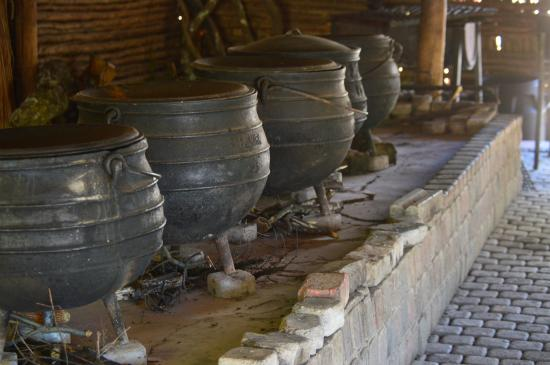

The handmade Basotho accessories

Traditional pots used to cook outside with fire wood and sometimes placed on tripodhttps://www.morijamusium.org.
There are many more that we can still be foundas our accessories at musiums
This are containers usually used to fetch and drink anything maybe
poured in the pottory or use the pottory to drink directly
A mixture of hats and basket made from natural
long grass and pottory made from clay
our home stick cut and decorated with different designs e.g some have beads around the stick especially at the top and
bottom or even include between the stick

This is beads put on a thread with any design and artmaybe to make a pattern or accessories which here
the made a earrings of the colour of our flag
This is our traditional blankets which sometimescan be worn by women getting married and there are those that made for kings
This is hats and broom made from long grass and there are still other accessories that can be
made from the long grass e.g baskets